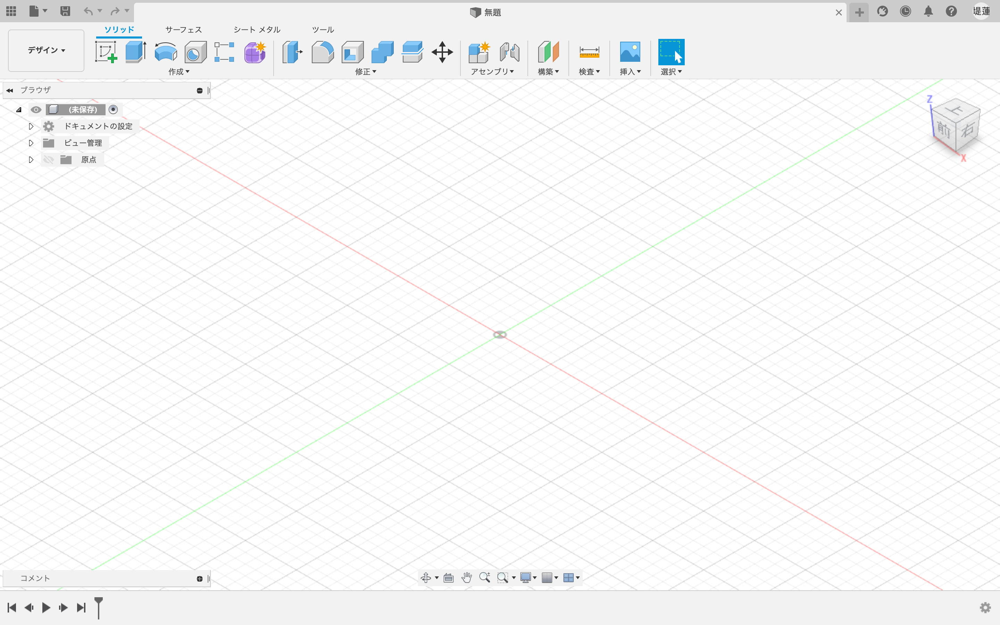
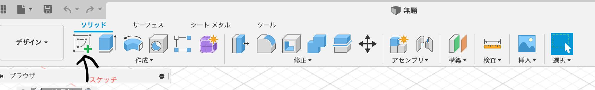
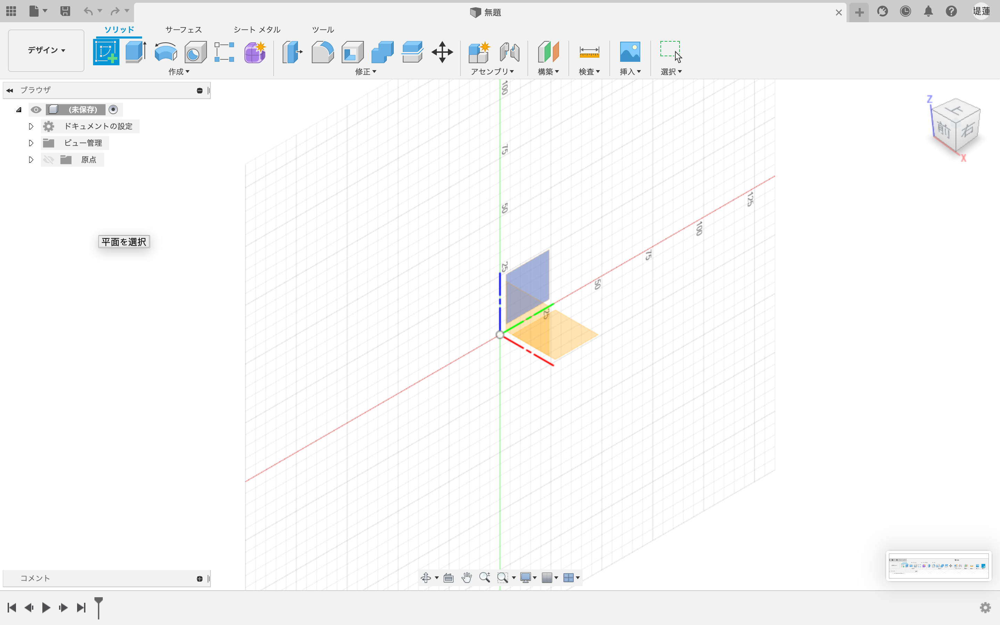
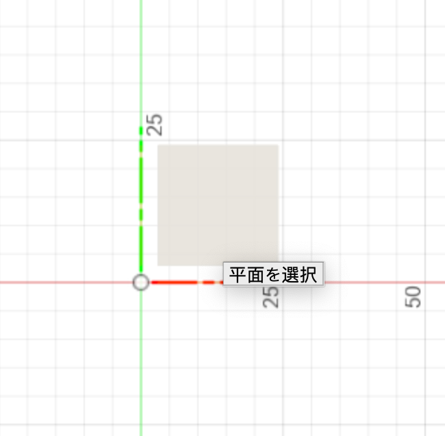
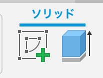
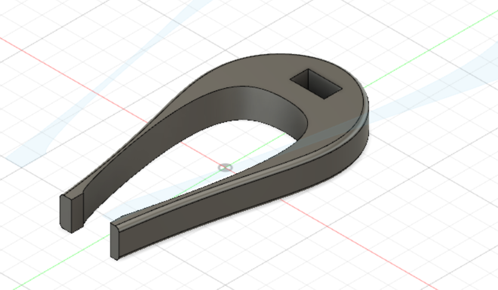

・まず、この画面になることを確認する。

fusion360を利用するときは、アプリが起動したらまずここを押す。
スケッチを押し、この画面になることを確認する。

そして、下記の画面が出たら、自分のみたい視点の平面を決める。

・平面を決めたら、自分の考えるものを描き、しっかりと全体を線で囲む。
自分の作りたいものの、２Dが完成したら、３Dにしていく。
その方法は、下記のスケッチのとなりのボタンを選択する。

・すると、下記のように、線が伸びて、立体的になる。

こうなれば、あとはプリンターでプリントする。
・曲線がサポイートが入りうまくいかず見た目が悪くなってしまったこと。
・先端部分がうまく噛み合わず、使い物にならないところ。
・３Dプリンターには、出来ない形も多く、特に能力のない現在では曲線や、空洞ができるものは難しいことがわかった。